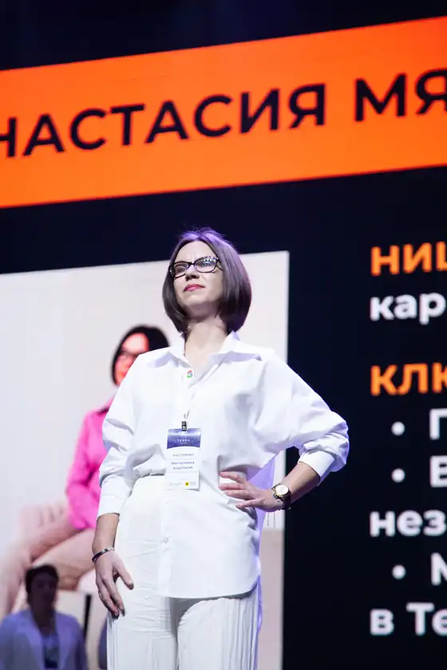

Базовый
5 900 ₽
Для тех, кто хочет понять, что не так, и начать с быстрых правок.
- Отклик на учебную вакансию вашего направления
- Скрины из интерфейса работодателя
- Письменный разбор
- Живая встреча 31 октября и запись
Отправил 50 откликов. Тишина.
Отказ пришёл через пять секунд. Меня вообще читали?
Статус «Просмотрен», а ответа нет.
Может, дело в резюме? Или в письме? Или меня отсеял фильтр?
Не понятно, это я не подхожу рынку или система сбоит.
Правила закрыты, как в лотерее. Что вообще происходит с моим откликом?
Хуже всего не отказ, а то, что вы не знаете, почему
Мастер-класс · 31 октября · онлайн
Покажу, что эйчар видит вместо вашего отклика
Правила закрыты, как в лотерее. Вы отправляете отклик и не знаете, что с ним происходит. На мастер-классе вы откликнетесь на вакансию под вашу должность, а я покажу, как этот отклик выглядит на экране работодателя, почему на него молчат и что поменять.
Так список видит эйчар: строка, а не вся ваша история
Часто не резюме целиком, а имя, должность, места работы, навыки и начало сопроводительного. Открывать полное резюме не обязательно.
На популярную вакансию приходят сотни откликов. Ответить каждому физически не получается, и отказ без причины становится нормой.
Отклик, не подходящий под требования, может сам остаться непросмотренным. И вы никогда не узнаете об этом изнутри.
Поэтому совет «доработайте резюме» не работает: никто не показывает, что именно в вашем отклике не так.
Вы записываетесь и заполняете анкету: должность, отрасль, резюме, зарплатные ожидания.
Я публикую учебную вакансию под вашу должность (в базовом тарифе — под ваше направление, в персональном — под точную). Найм по ней не ведётся.
Вы откликаетесь со своим сопроводительным, как на обычную вакансию.
Я показываю скрины вашего отклика в интерфейсе работодателя и пишу разбор: что видно сразу, три стоп-фактора, три правки.
Живая встреча. Типичные ошибки на обезличенных примерах и ответы на ваши вопросы.
Вакансия учебная: найм по ней не ведётся, вы откликаетесь осознанно, чтобы увидеть свой отклик глазами работодателя.
«Здравствуйте! Меня заинтересовала ваша вакансия, мой опыт полностью ей соответствует…»1
Было: «Мой опыт полностью соответствует…»
Стало: «В прошлой компании я перестроил воронку продаж, и план перестал зависеть от двух крупных клиентов. Ваша задача похожа…»
Такой разбор я делаю для каждого участника на его реальном отклике.
Увидите свой отклик так, как его видит эйчарСкрины из интерфейса работодателя.
Поймёте, где он теряетсяВ резюме, в письме или в соответствии вакансии.
Получите три правкиИ переписанное начало сопроводительного.
Узнаете, как устроен отборНа живой встрече, и сможете задать вопрос.
Приглашения не обещаю: решение принимает работодатель. Зато пропадёт главное — непонимание, что с вашим откликом не так.
Заявки до 28 октября
5 900 ₽
Для тех, кто хочет понять, что не так, и начать с быстрых правок.
11 900 ₽
Для узкой специализации, руководителей и тех, кому нужна проверка после правок.
Заявки до 28 октября. Мест мало, потому что каждый отклик я разбираю лично.

Автор
Я Анастасия Мягченкова. Этот экран я знаю изнутри.
Нет. Я показываю, как выглядит ваш отклик и что в нём поменять. Решение принимает работодатель.
Она учебная, и я об этом говорю прямо: найм по ней не ведётся. Вы откликаетесь осознанно.
Нет. Правки только по фактам: формулировки, порядок, акценты. Чего не было в вашем опыте, в отклике не появится.
Резюме и отклик видите только вы и я. Примеры на встрече обезличиваю и показываю только с вашего согласия.
Запись придёт вам после встречи, а личный разбор вы получите в любом случае.
В базовом вы откликаетесь на вакансию вашего направления. В персональном я публикую вакансию под вашу точную должность, записываю голосовой разбор и проверяю отклик ещё раз после правок.
Тогда берите персональный тариф: вакансия будет под вашу точную роль.
Заявки до 28 октября. Мест мало, потому что каждый отклик я разбираю лично.
Выбрать формат